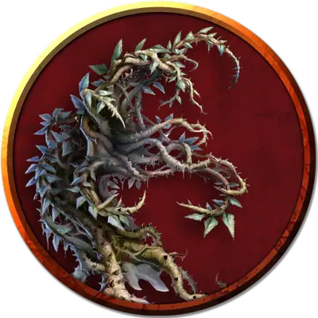

Колючий пращник
Thorn Slinger
Большое Растение, без мировоззрения

Класс Доспеха 11
Хиты 32 (5к10 + 5)
Скорость 10 футов
| мод | спас | ||
|---|---|---|---|
| СИЛ | 13 | +1 | +1 |
| ЛОВ | 12 | +1 | +1 |
| ТЕЛ | 12 | +1 | +1 |
| мод | спас | ||
|---|---|---|---|
| ИНТ | 1 | −5 | −5 |
| МДР | 10 | +0 | +0 |
| ХАР | 1 | −5 | −5 |
Иммунитет к состояниям глухота, испуг, ослепление
Чувства слепое зрение 60 футов (слеп за его пределами), пассивное Восприятие 10
Опасность 1/2 (100 опыта)
Бонус мастерства +2
Особенности
Клейкие цветы. Колючий пращник приклеивается ко всему, что его касается. Существо Среднего размера или меньше, к которому приклеился колючий пращник, становится схваченным им (Сл высвобождения 11). Проверки характеристик для высвобождения из этого захвата совершаются с помехой. В начале каждого хода колючего пращника, всё схваченное им получает 3 (1к6) урона кислотой.
Обманчивая внешность. Пока колючий пращник неподвижен, он неотличим от обычного куста.
Действия
Колючки. . Рукопашная или дальнобойная атака оружием: +3 к попаданию, досягаемость 5 фт или дистанция 30 фт, одна цель. Попадание: 8 (2к6 + 1) колющего урона.
Описание
В одном из коридоров внутри потаённого святили- ща Тамоачана находится длинная узкая яма, на дне которой растёт несколько больших кустов. Хотя на первый взгляд они могут показаться безобидными, эти колючие пращники вдвойне опасны, о чем вскоре узнает каждый, кто попытается преодолеть яму или упадёт в неё.